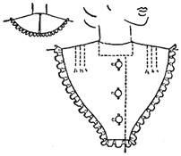
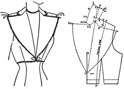

1942—Modern Pattern Design
by Harriet Pepin
Chapter 7—Collars
Collars and Cuffs
A well fitting collar may make or break a garment. The thought and study which may be necessary to originating a beautiful collar is well worth the time and effort because the same pattern may be used repeatedly in its same form or with minor changes. Wholesale manufacturing designers always have their "pet" collar patterns which they find to please many types of women. In fact, the right proportions to a collar may be what sells the dress by the hundreds.
A well fitting collar must be comfortable and flattering. It must be so designed as to permit wearing a wrap, if it is on a dress. If it is attached to a coat, it must permit wearing a hat unless it is attached to an evening wrap.
The same basic principles used to produce collar patterns may be applied to designing cuff patterns. As cuffs are usually of secondary interest and may merely repeat the design interest of the collar, only limited space will be devoted to the study of cuffs in this text.
Collars are graded when garments are reduced or increased in size. The collar which has been designed for a size 16 would appear of wrong proportion when used on a size 40 dress. Certain collars, having certain degree of roll or stand, are better suited to junior size dresses. Others prove more adaptable for children's apparel and still others give a feeling of dignity and would be used for clothes for elderly women.
Vocabulary: Before attempting to interpret the instructions for making collars, it is important that you know the terms which are used to describe certain portions of collars. They are:
Attached: A collar so designed as to be attached to any shaped neckline and to be so worn without being adjustable.
Convertible: A collar designed to be attached to bodice in such manner as to permit wearing it open or closed and still maintain a finished appearance.
Break: A term used to indicate the point where the rever, which is built in with the bodice, may start to fold back into lapel.
Neckline: The portion of the collar which will be attached to the garment.
Style Line: The outer edge of the collar where trimming may be added.
Stand: The portion of the collar which provides the height of roll.
Folding Line: The actual point along which the roll appears when collar is being worn. It may be imaginary or pressed into a flat edge as in tailored suit types.
Classification of Collars: From a pattern designer's point of view, collars may be classified into three major classifications, namely: Attached Collars, Convertible Collars and Tailored Suit Collars. These classifications refer to principle of cut rather than functional use of collar itself. Some collars are cut by one method, others by a combination of two methods.
NOTE: All measurements given are for full size garments—14 to 18.
ATTACHED COLLARS
Making the Collar Sloper: Neckwear designers use a collar sloper to produce new designs for collars to be attached to varied size garments. Custom designers usually use the new neckline on the garment pattern instead of a sloper as the single collar design will be used as a part of the design for a garment. Likewise with the wholesale dress or coat designers. The sloper merely represents the shape of the area around the neckline, with notches placing the position of the shoulder seam of the bodice sloper.
1. Place front and back bodice slopers together in manner indicated on this page.
2. Trace around them on manila cardboard.
3. Measure inward from points E, A and F a distance equal to one half the shoulder seam length. Describe circle parallel to neckline which will connect these points.
4. Mark notches showing position of basic shoulder seam. Label front and back. Cut out the sloper, ready for use when needed.
Flat Collar
This name is given to any collar which appears to lie flat around the base of the neck with no visible appearance of any roll. It may be cut directly from the collar sloper or the shaped neckline of any garment for which the pattern has been designed and collar is to become a part of.
Trace around sloper and add 1/8 inch around neckline which will reduce its true size slightly. Mark indicators. Add 1/4 inch seams to style line and make facing pattern. Cut bias neck band.
NOTE: When attaching neck band, or sewing collar directly to garment, neckline of collar must be stretched very slightly to fit. This will cause a very slight roll, which provides space for edge of garment to lie between collar band and collar. This little trick prevents tendency of the flat collar to "kick up" on the edge upon being attached to neckline of garment.
Plastron Type Collar
The plastron collar above is merely a flat collar which has been finished without the neck band to attach it to garment. The neckline is built up 1/8 inch, plus the normal 1/8 inch seam allowance to insure a close fit so neckline of garment will not creep up above neckline of collar. Some designers attach tabs at the center front and each side of back closing so the collar may be temporarily attached with small safety pins. The illustration shows a plastron collar with a round neck designed to conceal a square neck on garment. Notice how the buttonholes on the collar have been placed in line with buttons on the dress to facilitate buttoning the collar down firmly in front.
Bertha Collar
The true Bertha collar extends from the neckline to a point just beyond the normal armscye. Occasionally you see a similar type collar which has a definite shaping seam over the arm. Such a collar would be made from the Dolman cape pattern.
The neckline is reduced in size to form the tiny roll and collar is completed in manner desired. Should it be used on a garment having a puffed sleeve, it would be slashed and spread slightly at normal shoulder seam position to insure the neckline fit.
This collar derives its name from a short cape which was popular in the 1920's. It need not necessarily be used with a close, round neckline nor have a round style line. It may be emphasized in outline by the addition of ruffles or it might be cut into several sections to add further interest.
Rippled Collar
The rippled collar, cut on a circular flare principle is youthful and pleasing. In this design, the collar has the seams at normal shoulder position and center front in order to have each half the front spread into a complete circle. Necessity for seams would be dependent upon the degree of fullness. If collar closes at center front, no center back seam is needed. Circular ruffles may be introduced to plain round collars, or small godets set into the style line at intervals.
Elizabethan Collars
It has been told that proud Queen Elizabeth sponsored this fashion for collars which would conceal the back of the neck because she had a blemish and wished to conceal it. It became conventional attire during her reign along with the wide stiff ruff. It being impractical to wear under wraps, it is generally used for hostess and bridal gowns. In more conservative proportions, it is seen on waitress and beauty operator uniforms. This demonstrates method for using a style neckline as basis for designing collar. The slashes are started 1 1/2 inches from center back. This is the secret of making the collar stand up without artificial support. Spread sections 1/4 inch each for a collar 4 inches wide.
When a strip of old lace is being used, one is reluctant to cut it. A similar style of collar can be produced by shaping it with darts which reduce the style line down to size of neckline. In this design, sections A and B would be folded back under neckline of the garment. If the ends of the lace were mitred into squares, a similar style to that illustrated at the left would result.
Half Roll Collar
This style of collar is extremely popular in the dress industry because it is becoming to many women. It has a stand at the back which gradually lessens until the collar lies flat at the front base of the throat. It is adaptable to various shapes of necklines as the following illustrations show. The basic instructions apply to any one of the three varieties of the following finished collars illustrated.
1. Draw around  front and back bodice slopers
as illustrated, shifting the shoulder dart over to the shoulder for convenience.
front and back bodice slopers
as illustrated, shifting the shoulder dart over to the shoulder for convenience.
2. Draw in the style line of the front of the collar on the front tracing. Label A, B and C.
3. Label points G and E on back bodice tracing.
4. From center back point G, measure upward a distance equal to twice the desired amount of stand in the finished collar. Mark point H and locate J halfway between G and H. J is the folding line position.
5. From point J, measure downward a distance equal to the desired finished width of the collar at the back plus 1/4 inch. (F)
6. Locate point D by measuring line A-C on front bodice.
7. Square a line from H equal to back garment neckline G-E.
8. Connect D and I.
9. Cut out back portion of collar: D-I-H-J-G-F-D. Also cut out front collar section. Arrange the two sections so shoulder seams meet. Blend in line I-B. Complete final pattern and muslin.
NOTE: Should you wish to reduce the width of the collar at the shoulder, to merely trim off the edge would cause it to sag at the shoulder. A new draft must be made to the desired new proportions.
So that you may readily appreciate the many possibilities for creating new designs from a single collar pattern which fits attractively around the neckline, it is wise to pause here for experiment.
Because the line D-I supports the collar at a given point at the shoulder seam, the changes must be made from that point to the center front. Place a piece of thin paper over the illustration of this collar (upper left column). Trace in the area from the neck and shoulders to the collar edge, then roughly sketch out a few ideas for cutting experimental patterns. When you have a few, trace around the final pattern for this collar, first trimming away all seam allowances. Test the results of your pencil ideas, which may require correction when the muslin proof is on the model form. Round lines may be changed to diagonal, diagonal to vertical and horizontal, and so on.
Run through your daily newspaper ads, clipping interesting collar illustrations. After collecting a few, and working out some more basic collar patterns presented here, you will see that just a few patterns form the basis for hundreds of new designs that vary only in the style line at the front.
Half Roll Sailor Collar
Although many sailor collars are cut to lie flat, if a little stand is provided in the back, it will provide room for the bulk of the scarf and it will also be a little more becoming, especially to adult figures. The method used for this collar is identical with that used in the previous problem except that the V neckline is established first and then the remainder of the pattern is drafted.
When you have become familiar with the results of varying degrees of stand provided in collars, you will observe that the wider the collar, the less stand it should have. A satisfactory pattern was produced from this sketch in which the stand did not exceed three-fourths of an inch. If the stand is too high, from a profile view, the wearer will appear round-shouldered.
Because the original design for this half-roll collar was planned to provide width through the shoulders, the line D-I (which is dependent upon the original line A-C) is longer than it was in the previous pattern involving this cutting principle.
Although this illustration shows the conventional type of sailor collar, designers vary them in many ways, sometimes designing the front to be square and to fall slightly lower or higher than the point at which the lower back edge rests upon the shoulders.
If a deep V-neck similar to this were to be used as a detail of a hostess gown, the designer might employ gently curved lines and continue them into a curve across the back. Provided the length of the line D-I in the basic pattern isn't changed, she would use the same basic pattern to produce new designs quickly and accurately.
When you have experimented with variations of this basic collar, draft a new one from this same principle which will be attached to an oval neckline. Establish the line A-B first and then proceed in the usual manner. Compare the shapes of the two collars.
NOTE: Collars that have a stand at the back cannot be successfully closed in the back. To attempt this would result in the loss of the stand, and the entire beauty of the collar would be destroyed.
Half Roll Shawl Collar
Like the sailor collar, the shawl (sometimes called "fichu") collar may be cut flat or in a varying degree of roll as desired. In a simple style, it is used for mature women's clothing because it gives the feeling of dignity to the wearer and when it has been styled interestingly or given a new line through changing the style line, it may assume a more youthful feeling. A similar effect is achieved by the use of a simple bias fold of fabric such as that purchased at any trimming counter. However, that type will stand rather high at the back of the neck and this pattern may be designed as desired. You will also study another means of cutting a similar appearing collar in a later problem.
Notice that the little quarter circle godet which is set into the small slit at the point creates a softened effect and invites the eye above the bust level. Any number of interesting designs can be produced from the basic shawl collar pattern as long as the width of line D-I which rests upon the shoulder is not changed. Such a change, you have previously learned, will mean drafting an entirely new pattern to the revised width at that point. Notice the compound sweeping curve which appears through point OD on the finished pattern. This gives a graceful line to the silhouette of the collar, even when used in a simple form.
When the pattern is finished, try laying it on the muslin with a true bias fold at the center back and observe the result. The bias will permit the collar to adjust more smoothly. A collar which has an inch stand in the pattern will appear to have but a three-fourth inch stand when worn if cut on a true bias. While making this pattern, watch your proportions when planning the godet.
Because line A-B is straight, such a collar, when drafted, might be made a part of the bodice front from A to B. Lay the collar against the bodice front tracing, so the neckline edge B-I rests along the line A-B, and see how such a seam might be eliminated by placing a seam at the center back of the collar (the garment would slip over the head). If this type collar is planned for a surplice bodice front, the surplice pattern is made as usual (page 44); then the collar pattern is sketched between the V-neckline and armscye and traced off on a separate sheet of paper. From there on, the procedure for completing the collar would be as shown above.
The author wishes to emphasize, now that you have observed and compared collars with no stand and those with a stand at the back only, that the latter is the more popular—and more becoming to most women and girls. The truly flat collar is quite juvenile. As women mature, a prominent bone appears at the back of the neck. The collar with a slight stand conceals this; it also tends to give, from the front, a well-proportioned neck. The half-roll collar also hides prominent collar-bones.
Full Roll Collar
Although this collar is sometimes called the "Peter-Pan," it takes its professional name from the appearance when being worn. The finished collar should have a stand which is equal around the base of the neck. Because of the roll, it is especially pleasing for the woman who has an exceptionally thin, long neck as its round shape softens her angular features. It is youthful, so is not suited to elderly or mature women and should be definitely avoided by the woman having a round face and short, broad neck. When cut on the bias, the roll is less apparent and it appears cut that way in the majority of designs. If you wish to make the experiment, you will see that this collar, when cut wide, will be unpleasant in appearance as width seems to emphasize the rolled appearance. Therefore it is made rather narrow.
1. Trace around the shoulder area of front bodice sloper. Extend the line A-B outward from the shoulder neck point as a guide line.
2. Place the back bodice sloper against this guide line as shown in diagram with points C and B meeting. Fig. 1.
3. Square a guide line from the center front point E. Draw in the desired style line of the collar from the center back to the shoulder seam. Make this follow the general contour of the neckline.
4. Following the same shallow curved line of D-C, continue on to make the front collar line C-E.
5. Because the new collar line C-E is more shallow than the bodice front neckline B-E, it must be extended on to point F or until it equals the original neckline measurement, B-E, to which it will ultimately be attached.
6. From point F, complete the front style line to meet that which has already been sketched into the back section.
NOTE: In this design, a rounded front has been used, but it could be square or the curved lines inverted if desired. The distance that the front of your collar design stands away from the guide line will be the distance the same point will be from the center front edge of your finished blouse when the collar has been attached.
7. Trace out the outline of the collar in blue pencil. Observe that it is a very shallow curved shape. It is this shallow curve, sewed to the deep curve of the garment neckline which produces the roll around the neck.
It is suggested that you try this same type of collar in varying widths and with a variety of front shapes. You will then be able to observe its limitations.
Compare this finished full roll collar pattern with those made for the half-roll and the flat roll collars. Lay the center backs of all three collars one upon the other. Notice that the straighter the neckline, the more rolled the collar will become. This is an important fact to remember when you are designing collars.
Mannish Shirt Collar
If you will compare the shapes of all the collars you have produced thus far, you will see that the less curve there is in the collar, the more stand it will have when worn. The man's collar, being made of a straight strip of shaped fabric produces the extremity of stand all around the neck. It appears in riding shirts and other mannish apparel for women. Men's shirts show a wide variety of proportions and styles to suit the varying facial proportions of men.
Band:
A-B and C-D equal one half neck measurement. F-D equals half back neck measurement. B-D and A-C are equal in length. Locate point E half way between A and C one inch outward for tab lap. Draw curves from A to E and E to F. Note shape of curves.
Collar:
G-H is one half neck circumference. H-J is 1/4 inch longer than B-D.
I-J is one half back neck measurement. K-I equals H-J.
L is 1/16th inch from point G. Draw shallow curve from L to K.
Draw desired style line L-M-I. Edge L-K-H is sewed to collar band at A-B.
CONVERTIBLE COLLARS
Convertible collars are so named because they are designed to be worn either closed or open. When in the closed position, the convertible collar appears somewhat like a half roll collar attached to the neckline. When worn open, the front of the bodice folds back to assume the appearance of revers and the collar has a notched design. Such styles of collars must be accompanied with a facing which is attached to the bodice front so the garment will have a finished appearance either way it is worn.
Naturally, the width of the rever portion is governed by the amount of lap which is provided for closing the garment. They are, therefore, quite similar on all types of styles. The basic neckline is usually lowered slightly to create varied results, and the style line of the front of the collar may be varied as desired. However, as this type of collar is an accompaniment to so many tailored shirt-waist types of blouses and dresses, the proportions have become somewhat standardized and a designer will use what he considers to be the best proportions in many of his garments year after year.
After painstaking analysis in our classrooms, it was found that two types of the convertible sports type collar could be successfully developed on the same cutting principle. Although similar in appearance from a front view, these two collars are quite different in fit in the back.
For the sake of comparison, they are illustrated with similar pointed ends. However, there is no reason why they couldn't have curved ends instead. The important feature is the variance of cut in the back of each. It achieves a different fit.
Active Sports Collar
This collar provides a close fit at the back of the neck when both open and closed. This snug fit at that point makes it more becoming and also more practical for wear under suit jackets and coats.
The first step is to lower the front bodice neck line slightly, removing some of the intense curve.
1. To draft the collar, draw the horizontal line A-B equal to one half the new garment neckline.
2. To locate point C, square a line downward from B equal to one-half desired stand at back. This may vary from 1 to1 1/2 inches as desired.
3. Locate D by squaring a line upward from B which is also equal to half the desired stand.
4. Locate E from point D, a distance equal to D-C plus 1/4 inch. (As this is the style line of the collar, it must be made deep enough to hide seam at neckline.)
5. B-H and E-G equal one half the back neckline measurement. They are squared from points B and E respectively.
6. C-A is squared from C up to a point in line with point H and then breaks to form a compound curve. Complete desired shape of points on collar at F.
NOTE: The guide line A-B equaled the original neckline measurement. Curved line C-A has now become the edge of the collar and will be longer than the straight line A-B. Make A-C equal to A-B by moving E-C inward accordingly. Cut final pattern and make muslin proof with A-F-G-E-D-B-C-H-A comprising the one half of the collar cut on fold at center back.
Variation of Active Sports Collar
This variation of the regulation convertible sports collar looks about the same as the previous collar except at the back, where, instead of closely fitting about the back of the neck, it has a tendency to stand away from the neck. It is a good feature in the cotton sports garments because it provides ventilation at that point, but, when this collar is worn beneath the tailored jacket, which is made to fit up closely at the back of the neck, then the collar wrinkles badly and appears ill fitted.
Note that the style line of this collar appears on a straight line while the previous design provided for a slight fitting curve. This shaping curve contributes to the good fit, but unless the garment is intended to be worn closed, it can be designed on a straight line if desired. This collar develops nicely when using the striped fabrics because the style line is straight.
1. A-B equals one half the bodice neckline measurement and is a guide line.
2. B-E is three times the desired amount of stand.
3. A-C is a shallow sloping line which becomes the neckline of the finished collar.
4. Broken line A-D represents the folding line in the fabric.
5. E-F is squared from B-E. It is a straight line. Connect points F and A.
6. Your finished collar pattern is represented by the area A-F-E-D-C-A. Line C-A is longer than the guide line B-A which was made equal to half the bodice neckline. Reduce the length of the collar through the center back to make A-C equal the line B-A.
Reefer Collar
This collar takes its name from its original use on sailor's top coats called "reefers." It is found on ski-suits, trench coats, slack suits et cetera which are designed for warmth or for their mannish appearance. The method used combines that used for making half roll and full roll collars.
Try your pattern with a collar four inches wide with a stand of one inch on a full size garment. When back section has been drafted, cut it out and complete design as for the full roll collar. The squared line from center front is a guide line for making design for end of the collar. It may then be shaped as desired for the finished garment.
Note the compound curve at the shoulder point of collar. This permits it to adjust to curve of body. Center front of garment can be lowered as in active sports collar.
TAILORED SUIT COLLARS
The mannish-type tailored suit collar is so named because it is generally used for men's apparel. It resembles the convertible collar but it is not convertible and is not cut to be worn closed. When you have studied the method used to produce this type of collar, you will see that many styles may be designed upon that same basic method. The problems which follow this first explanation involve the repeated use of this basic procedure with varying proportions. The four basic points where variety is shown may be listed as follows:
1. The height of the closing which establishes break of rever.
2. The width and shape of the rever portions.
3. The height of the notch.
4. The shape of the collar portion.
When we stop to consider that the majority of men's coat styles are dependent upon these varied points of collar design, we can appreciate that some designs for tailored suit collars will be becoming to certain women while others will be suited to some other women. A mature dignified appearing garment can be produced or a snappy, impudent appearance can be produced.
Many methods have been worked out for producing this collar in men's tailoring work. Exhaustive tests were made by students in class sessions and as a result, the method given here was produced. The method was then tested with many varying heights of the closing, heights of stand, widths of revers and heights of the notch. It then became apparent that this method might be accepted as being adaptable for designing women's garments. Very few women's garments are "man-tailored" and it was necessary to work out a method which would produce a neat, smartly fitted tailored suit collar which could be made of soft fabrics. The finished garment depends upon final construction.
Although the following examples afford an opportunity for you to create many designs from this basic method, to complete this study, you should clip many examples of the tailored suit collars. You will find that fashion in certain years will favor the high closing, for instance, with rounded lapels.
Another year the notches may be open and the next year they may be closed. In a like manner, fashions for men change from year to year, yet these changes are all based upon the use of the same collar.
The Single Breasted Type with Medium Closing
The proportions given for making the draft for this collar are based upon a normal size 14 figure.
In each of the following problems, a suggested height of the stand has been given. These dimensions produced what the writer considered the most pleasing muslin for the height of the closing. In manufacturing plants, such dimensions are more or less standardized at between 1 inch to 1 1/2 inches. When using these instructions to produce a pattern for individuals, the length of the neck should be considered and stand of the collar changed accordingly.
The accompanying sketch shows an average garment having the tailored suit collar. The height of closing, width of revers, position of notch and the height of stand are average. Therefore it would be a style suited to mass production.
Experiment in our resident classrooms proved that, to produce a well fitting collar of this type, best results were obtained in most of the styles, if a portion of the basic bodice control was thrown to the center front. This results in length being added from the shoulder neck point B and the center front point A. (Figs. 1 & 2.)
It is necessary that you know just how much additional length will result from pivoting some of the control to the center front as the darts vary in size in different personal blocks. Figs. 1 and 2 show how this may be done.
1. Square a horizontal line from the center front of your waistline sloper over to the point of the bust. Label this point C.
2. Starting from point C, trace around the sloper to the point of the dart, as shown by the arrows in Fig. 1. Keeping the sloper firmly in position, label your starting point on your draft as point A.
3. Place your pencil in the dart point and pivot the sloper to the left as shown in Fig. 2, until point C on the sloper is the desired distance (the desired extra length being added for the type of collar being drafted) from point A on your draft. With your sloper held in position, complete the tracing up to shoulder neck point B.
NOTE: It is only necessary to trace the sloper to point B and it does leave the area between points A and B unhampered with unnecessary lines.
Read Each Step Carefully
1. Trace around front bodice sloper, from A to B, pivoting one inch into the center front. (See above instructions.) This amount can vary.
2. Establish height of closing two inches below bust line. Add one and one-half inches lap. Label point C.
3. Extend shoulder line from B three-fourths inch to locate point D. (This amount standard in all sizes.)
4. Draw folding line C-D. Extend this line from D a distance equal to one-half back neck measurement plus 1/4 inch. Label point E. (This added fraction should be doubled when making double breasted styles.)
5. Square the line E-F from line D-E. It is one-half inch long. Connect F and D.
6. Line F-G is squared from line F-D. It is one and one-fourth inch long or the desired stand. Label G.
7. The line G-H is squared from G and is one-fourth inch long in all standard sizes. Label point H.
8. Connect points F and H. Extend line H-F through F, a distance equal to the collar stand (F-G) plus one-half inch. Label point I. This is the width of the collar at the center back.
9. Fold pattern paper under on folding line C-D. Sketch in desired shape of collar and lapel upon front bodice section using proportions shown in your sketch for a basis. Locate point J, temporarily, on the folding line.
10. Trace these lines through with your wheel and then open paper flat. With blue pencil, trace over the perforated lines so you may clearly see the shape of the pattern as it appears at this stage.
11. The shape of the line H-B will vary with different styles. In this case, it is a shallow curved line. Start to form this line by squaring a distance of one and one-half inches from H and then, with the aid of your curve, connect the line with point B. In some designs, a straight, squared line from H might connect with B. In other types of closings, it may appear as a reverse curve. However, in any case, always start the line by squaring a short distance from H so your pattern for center back collar won't have a point.
12. In order to give a pleasing appearance when the garment is being worn, the line J-K should have the appearance of being practically straight. It should extend smoothly through point J. Lay your curve from KK to B, using the straight arm. If point J does not fall exactly on the line, that is not important as the neckline of this type of collar is not fixed, as in the convertible type, but is actually part of the design. KK-J-B should be a continuous sweeping line.
13. The next step is to complete the style line of the collar. When you sketched in your design in step #9, you traced the design for the ends which would appear as a part of the notched design lying upon the chest when garment is worn. That portion is labeled J-KK-MM-OO. The remaining style line of the rest of the collar must be dependent upon the first sketched lines made in step #9. Square a line from center back line I-F a distance of one inch ?nd label that point Q. Connect points I-Q-OO-MM with a shallow compound curve.
14. The collar being cut double, the under section usually is cut on the bias with a shaped seam which aids in making the upper collar hug the back of the neck closely. The revers are cut in one with the bodice and have a facing which extends out to the dotted line N-P.
NOTE: Although, to avoid confusion in the diagram, notches were not placed in Fig. 3, they should be recorded before following tracings are made of the various sections. A cross sectional line across the line J-KK with the tracing wheel will establish position of the notch which may then be made in the usual manner in the final pattern.
15. On another piece of pattern paper, trace off the pattern for facing: B-Q-N-P-C-LL-KK-J-B.
16. As your upper, or outside collar portion wilt be attached to the facing, trace this section off next: MM-KK-J-B-H-F-I-Q-OCHMM. Establish grain parallel to center back of collar and indicate with three circles for a fold.
17. Trace off pattern for bodice front: C-LL-KK-J-B-O-N around armscye and bodice to C.
18. Trace off pattern for half of under collar: MM-KK-J-B-H-G-F-I-Q-OO-MM. Note the shaped center back which provides for use of a seam. Also note that the neckline of the collar facing is larger than the upper collar. This is necessary when the heavy woolen is used for lining and is not turned under but "cat-stitched" over the neck seam of garment as in men's suit coats. When making a silk weight jacket, the under collar is made identical to upper collar. In this problem, cut the upper and lower pattern sections to study their usefulness.
19. Provide normal seam allowances to all edges except the collar and rever edges and edge of facing. These may be smaller because there is little strain on them. Retain your draft and complete your muslin as instructed on the following page. To get a good test, baste sections together instead of pinning them.
ASSEMBLING CONVERTIBLE AND TAILORED SUIT COLLARS
The proper method for assembling the convertible style collar, or the tailored suit notched collar, is simple. However, because so few of our resident students were familiar with the method, it was believed advisable to include these instructions in this text.
It is not practical to attempt to assemble the Muslin by the pinning method, so a basting stitch should be used instead.
1. If the under collar has been planned to have a seam at the center back, sew these two sections together. (Fig. 1.)
2. Sew shoulder seams of bodice. (Fig. 2.)
3. Sew shoulder seams of facing sections together. (Fig. 3.) (When no back facing is used, the collar would be attached to the front portions of the facings.)
4. Starting from  the center back, pin the neck edge of the upper collar to
the neck edge of the facing, working toward the front of the garment. Keep
the material flat upon the table. Baste and remove pins. (Fig. 5.)
the center back, pin the neck edge of the upper collar to
the neck edge of the facing, working toward the front of the garment. Keep
the material flat upon the table. Baste and remove pins. (Fig. 5.)
5. Sew neckline of the under collar to neckline of the bodice, working in the same manner. (Fig. 4.) In tailored wool suits, this step would be eliminated. (Examine a man's coat collar.)
6. Flatten and snip raw edges of seams on both sections just assembled.
7. Lay facing against bodice section with the right sides of each lying against the right sides of the other. (Fig. 6.)
8. Starting at the center back of the collars, pin the outer edges of the collars and revers together, with the seams meeting exactly. Baste, starting from center back. (Fig. 6.)
9. Snip off the pointed corners of collar and revers to eliminate bulk when garment is turned right side out. Snip inverted corners A and B diagonally to stitching line.
10. Turn garment right side out, carefully pulling points into shape.
11. Tack seam edges together across center back to hold collar in position.
12. In woolen tailored notched collars, the under collar is usually cut on the bias and reenforced. In such cases, this would be your second step in the procedure.
The Single Breasted Type with High Closing
In a full size pattern, size 14 to 18, the following proportions produced a successful muslin.
1. Make the stand on this collar one inch.
2. As the closing is extra high and revers short, this style did not require more than one-fourth inch shifted to center front to lengthen the folding line.
3. Plan the break at three inches above bust level.
4. Plan your lap to use conventional one inch buttons.
5. Try making the upper and lower collars identical as you might do for a gingham suit dress. That would mean that both collars would have the center back, I-H, on the fold.
Notice how the shape of the divisional lines of the jacket have been repeated in the style line of the revers to bring further emphasis. For experiment, try a rough sketch using these lines inverted and then try to add further interest in pockets or other seams which repeat the lines. To produce this design which has an extra high closing, use the same basic instructions and the proportions suggested above.
NOTE: Before drafting this design, turn back to page 157; compare the two diagrams. Note that the high position of C swings the entire collar portion proportionately. Compare the two collars for style lines. Fundamentally, they employ the same drafting principle, but each change in the height of the closing, or in the width and shape of revers, causes the pattern for each of the following examples to change in shape. To become familiar with this phase of designing, many models should be made in muslin from original designs proportioned by yourself, or random sketches from fashion magazines. Through this drill, students soon memorize the steps of procedure and become adept in the use of this principle.
The Double Breasted Style
In a full size pattern, the following proportions produced a successful muslin. Note that, although the break is located on a level with the bust, the extra length shifted to the bust is only one-half inch. On a single breasted garment, it would be an inch. See set of proportions in summary on page 163.
1. Shift one-half inch to folding line.
2. Plan full double breasted closing. Note that lap edge is not truly vertical.
3. Plan lap for use of button one and one-fourth inch in diameter.
NOTE: Step 4 in your draft instructions makes special reference to the length of the line D-E when making a pattern for a double breasted garment. Use your curve when describing curved shape of the rever portions.
The amount to be added to the folding line through shifting of control will vary greatly with individuals. Tailors take a "guide measurement" from the center back of the neck down to the desired level of the break. Then the tape line is extended to the waist to establish exact height of point C on pattern. This permits checking to insure that sufficient length has been pivoted into center front before a muslin is made. It is difficult to so alter the muslin afterward. Make the folding line a bit too long rather than too short.
The Single Breasted Type with Low Closing
The sketch for this design suggests a low stand used at the back. Compare it with the sketches shown on the two previous designs. Also note that the break of the rever is located just above the waistline, which forms an extra long folding line. The following proportions produced a pleasing result in muslin when the pattern was drafted from the sketch.
1. Plan the collar stand at only three-fourths of an inch.
2. Because the folding line is extra long, shift the control to lengthen it one and one-fourth inches.
3. Plan the button to be one inch in diameter.
4. Use normal one-fourth inch extension to make line D-E.
5. Plan wide, generous revers which extend beyond the armscye of the garment as shown in the sketch. Note the horizontal line of the top edge of the revers. This will give the finished garment a youthful appearance despite the deep V closing. If the same low closing were used, with narrow revers, the garment would appear mature.
Tuxedo Closing
Observe that this design provides for the open or "Tuxedo" style of front which eliminates the usual V-shaped neckline. This will mean a few minor changes in the method used in the previous designs. The following proportions were used to produce a pleasing garment.
1. Make stand of the collar one and one-fourth inches.
2. The Tuxedo style front eliminates the need for shifting extra length into center front.
3. Plan the tuxedo points wide enough to accommodate a button one and one-half inches wide.
4. Step 4 in your drafting instructions doubles the amount added to the line D-E when making a double breasted closing. In this style, that rule would be reversed and only one half the amount would be added or one-eighth inch. Upper and lower collars could be made identical as for a wash garment.
The area used for the tabs would be built on the rever section as they extend down below normal waistline.
The Single Breasted Type with Shawl Collar
It is possible to cut a shawl collar on the principle of the tailored suit collar such as illustrated here. The proportions given were found suitable for a size 16 garment.
1. Make the stand of the collar one inch.
2. Plan the break of the rever at two inches below bust leveL
3. Increase length of folding line one inch by shifting control to center front.
4. Follow drafting instructions given for tailored suit collar except that point J is eliminated.
This produces a garment which has the collar cut in one with the bodice front and the shaped seam at the center back. Although in this simple form, it appears mature, many interesting designs may be produced from this method. When used for house coats, bathrobes and evening coats designed for a double breasted closing the same rules which apply to the double breasted tailored notch collars would be used to make this collar.
SUMMARY
After drafting this series of varied tailored suit collars, you have probably become aware that variations, aside from the size and the shape of the collar, occur in the two basic steps given below. The following proportions represent the findings of the instructors and students who spent many hours in comparative study by drafting a great variety of designs. This chart may serve as a guide for you.
Establishing Length of Line D-E: varies with style of closing or degree of lap used:
Single Breasted: Line D-E equals one-half back neck measurement plus one-fourth inch.
Double Breasted: Line D-E equals one-half back neck measurement plus one-half inch.
Tuxedo Closing: Line D-E equals one-half back neck measurement plus one-eighth inch.
Lengthening Folding Line by Shifting Control to Center Front: varies with height of break of rever—also with postures of individuals.
At bust level: Shift control to increase folding line three-fourths inch.
One to three inches above: Shift control to increase folding line one-fourth inch.
Two inches below bust: Shift control to increase folding line one inch.
Waistline closings: Shift control to increase folding line one and one-fourth inches and up.
Tuxedo style closings: No extra length required at folding line.
Extra high chest closings: No extra length required.
Double Breasted styles: At the above mentioned levels, shift control only half that normally required for single breasted closing.
When Cutting Collars Involving the Use of Thick Fabrics: sometimes the outer edge of the collar has a tendency to curl. If the width of the finished pattern for the upper collar is widened from one quarter to one eighth inch at the neck edge, throughout the area which provides a stand, this will correct this difficulty. The thicker the fabric being used, the greater the need for the increase.
Raised Necklines
The raised neckline is a favorite with designers because it may be used as a substitute for the plain flat collarless neckline which is not so flattering to some women. The proportions given below will produce a nicely fitting neckline for standard sizes providing for normal head carriage. (Fig. 1)
1. Establish the height of closing three inches above bust level.
2. B-C is equal to one half back neck measurement and is squared from the shoulder line B.
3. D-C represents the stand and is one inch long, squared from point C.
4. From D, square a guide line equal to one half the back neck measurement. Label E.
5. The line D-A should be a compound curve. It appears straight when garment is worn.
6. The standing neck band is cut in one with the bodice. Provide seams as shown in diagrams of final patterns.
NOTE: Because this design called for a high closing, no control was shifted to lengthen the edge of the new neckline which is relative to the folding line on tailored suit collars you have just been studying. When designing this style of neckline with a low closing, first shift control in accordance with the summary on the previous page.
When cutting this pattern for one having an erect head carriage, this draft should be corrected slightly to give extra length at the top edge of the neck band. When draft has been made, locate point C in the manner shown in upper diagram. Move C one fourth inch and then you will have a slight flare from E to D. (Fig. 2)
Likewise, when cutting this style of collar for a woman who carries her head somewhat forward, the opposite type of curve would be needed to keep the collar from gaping awkwardly at the upper edge. In such cases, swing point C over one fourth inch in the opposite direction and complete in usual manner. Note how this produces a curved collar of the opposite type. (Fig. 3)
If you look for them, you will find many interesting uses for this neckline in conjunction with other portions of the design for dresses and coats. It is worked into yoke as well as plain styles.
Collarless Necklines
The plain, collarless neckline is the most difficult for most women to wear as its unrelieved line provides little more than a frame for the neck and throat. The addition of trimming, small revers, or a collar which has an interesting style line, will prove more flattering to most women. Therefore, when planning to use such a simple neckline, great care must be taken to give it pleasing proportions which are suited to the face, neck and size of the wearer.
Fig. A illustrates a square neckline of uninteresting proportions. It is neither high nor low and its monotonous proportions do nothing to flatter the wearer. Fig. B shows the same neckline lowered to form a rectangle. Note that this change will have an effect in slenderizing the neck of the wearer. Fig. C shows the broad, squared neckline. As the edge is outside the area of the head and neck, it requires perfection of neck and shoulders to be worn. If used for a customer having a broad neck and square shoulders, it will reveal and emphasize her physical type. Fig. D is a pleasing variation of the square neck. Its broad base is flattering. Fig. E shows the straight lines curved to give a still softer effect. The drapery and clips invite attention away from the throat.
Fig. F shows a badly proportioned round neck which is monotonous and which does nothing for the wearer. It lacks character. Note the improvement shown in Fig. G when the line has been brought close to the neck at the sides and then lengthened to form an oval. It is a good plan, when fitting a muslin foundation pattern to a customer, to experiment with a string of beads and then trace in the best type of oval neckline for her.
The "bateau" or boat neckline shown in Fig. H is not suited to many women. It broadens the shoulders and will seem to shorten the neck. Therefore, it should not be used by stout, plump women.
Fig. I exposes both neck and shoulders, like C, and may be worn only by women who have exceptionally beautiful throats. For that reason, it does not appear in many evening dresses found in stores.
When planning the V shaped neckline, be sure that the line is straight and clean. The narrow shaped V neckline is sophisticated and flattering to the greater percentage of women. Therefore, it seems to remain in the fashion picture year after year. It has dignity and creates an emotional, dramatic feeling when used in evening dresses, hostess gowns and semi-formal apparel. When additional drapery is added, as shown in Fig. J, with a focal point of interest appearing at the point of the neckline, such as a bow, or jeweled clip, it is most pleasing to the young matron or dowager.
Carefully study examples of collarless necklines. Clip those which show careful planning. It will help you to appreciate the work of a good designer.
Cuffs
On this page are illustrated a few basic types of cuffs, with the diagrams which give the method which might be used for cutting each. They are not presented as a problem, but as a basis for analysis of representative styles. It is hoped that they will be a guide for you to develop a method for cutting original designs which you may wish to make from time to time. Note that the same principles are used for introduction of fullness as has been used in previous problems in pattern making.